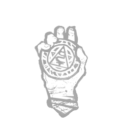

灵魂守护 Soul Guard
所属：谢丽尔·梅森（逃生者）
| 等级 | 档位 1 | 档位 2 | 档位 3 |
|---|---|---|---|
| 数值 | 4 1 | 6 | 8 |
描述
"你经历了常人难以想象的苦难，而正因如此你才更加坚强。" 每当你接受治疗或从濒死状态中恢复时，灵魂守护便会触发其主要效果：给予你持续4/6/8 秒的坚韧状态效果。若你执行了任何种类的显眼行动，坚韧效果将被提前取消。该技能冷却时间为 30 秒。当你处于诅咒状态效果期间，灵魂守护会触发其主要效果之外的附加效果：解锁自我恢复能力，使你能够完全从濒死状态中恢复。